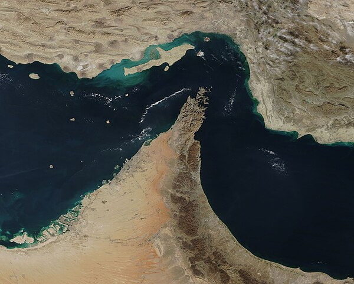
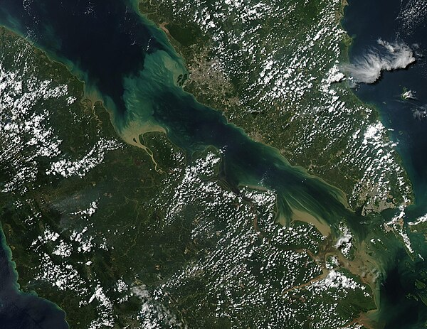
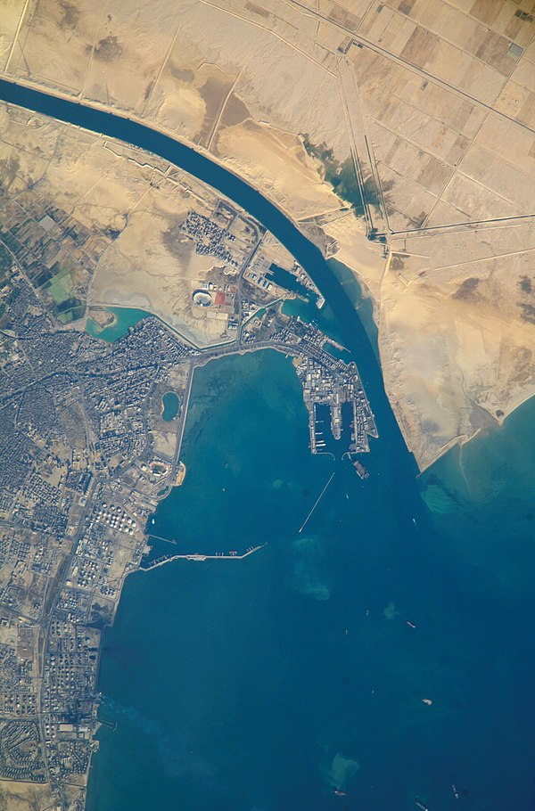
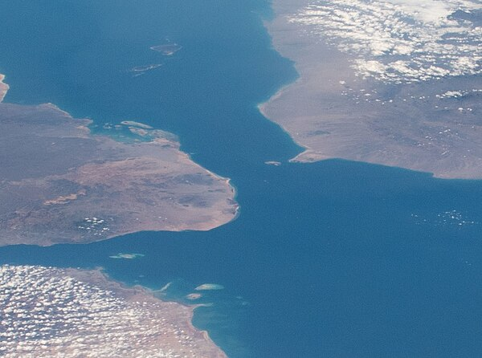
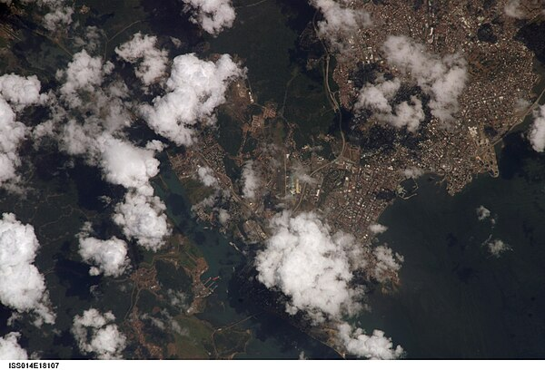
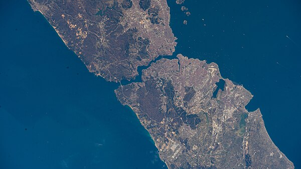
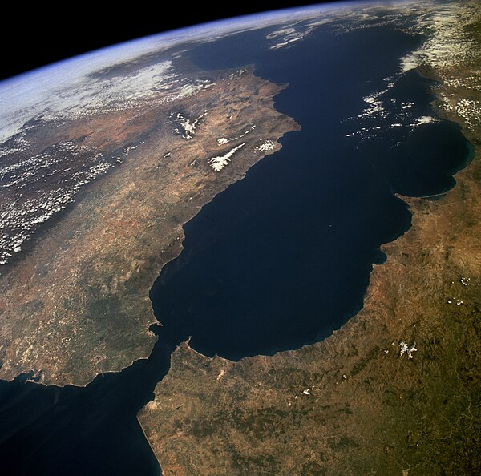
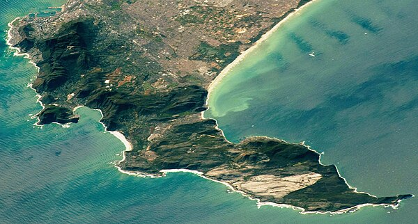
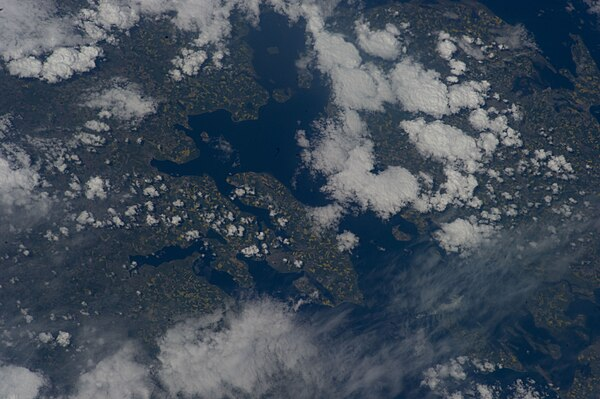

Persian Gulf · Iran / Oman
The world's most critical energy chokepoint — with no maritime bypass route. Iran sits along its entire northern coast, giving it the ability to threaten closure with mines, missiles, and fast attack boats. Limited pipeline alternatives exist but cannot replace the ~20 million barrels/day that transit by sea.
No maritime bypass
bypass route

Southeast Asia · Malaysia / Indonesia / Singapore
The busiest chokepoint by ship count and China, Japan, and South Korea's primary oil lifeline from the Middle East. A blockage here would rival Hormuz in economic impact. Piracy has historically been a concern; Singapore manages heavy traffic coordination through one of the narrowest shipping lanes in the world.

Egypt · Mediterranean / Red Sea
Man-made canal connecting Mediterranean to Red Sea. Carries ~12% of global trade and ~10% of oil. The Ever Given blockage (2021) cost an estimated $9.6B/day. When Bab el-Mandeb is blocked, the Suez route becomes useless — ships must reroute around Africa regardless.
Cape of Good Hope
bypass route

Red Sea Gateway · Yemen / Djibouti / Eritrea
The southern gateway to the Suez Canal. All shipping between Asia and Europe via Suez must pass through this 18-mile-wide strait. Its proximity to Yemen makes it vulnerable to non-state actors and regional instability. When blocked, ships must reroute around the entire African continent.
Cape of Good Hope
bypass route

Central America · Atlantic / Pacific
The primary Atlantic-Pacific shortcut, carrying ~5% of global trade. Relies on freshwater from Gatun Lake to operate its lock system, making it uniquely vulnerable to drought. A severe drought in 2023-24 forced Panama to reduce daily transits by ~40% — a climate-driven chokepoint disruption.
Drake Passage
bypass route

Turkey · Black Sea / Mediterranean
Turkey controls both the Bosphorus and Dardanelles under the 1936 Montreux Convention, giving it legal authority to restrict warship passage in wartime. This single-nation control over a major waterway makes Turkey a pivotal gatekeeper between the Black Sea and the Mediterranean.

Atlantic / Mediterranean · Spain / Morocco
The only maritime gateway between the Atlantic and the Mediterranean. All shipping to or from Mediterranean ports must pass through here. Gibraltar, on the northern shore, is a British Overseas Territory. One of the busiest waterways on Earth with low disruption risk but enormous strategic significance.

South Africa · Atlantic / Indian Ocean
The primary alternative for vessels bypassing the Suez Canal or Bab el-Mandeb Strait. While it avoids high-risk areas like the Red Sea, it adds approximately 3,200 nautical miles and 10-14 days to a standard Asia-Europe journey.
Suez / Bab el-Mandeb
bypass route

Baltic Sea outlet · Denmark / Sweden
The only maritime exit for Baltic Sea nations — Russia, Finland, Sweden, Poland, Germany, Estonia, Latvia, Lithuania. Russian oil and gas exports and Nordic trade all depend on these straits. NATO membership of Denmark and Sweden makes these straits geopolitically significant in any European security scenario.